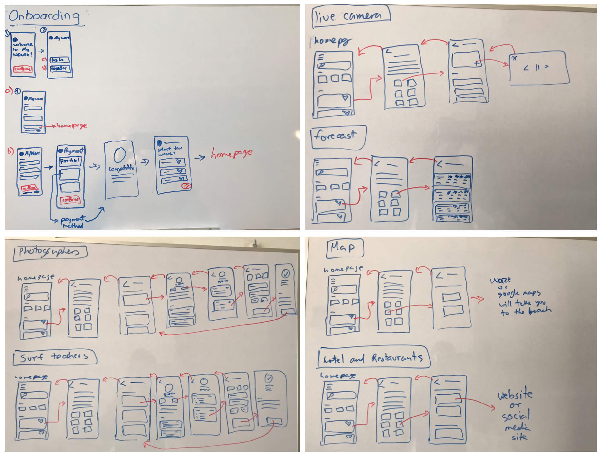

Florista Florist App
UI/UX Case Study
Project overview
The product: Florista florist is a florist shop located in the capital of Peru. Florista Florist strives to deliver beautiful flowers and offers the choice to build a flower arrangement for which one can select the kind and amount of flowers one wants and modify the price. Florista Florist's target customers are workers who lack the time to send a flower arrangement and are looking to send something more personalized.
Project duration: October 2021- February 2022
The problem: The lack of time that busy workers have to shop for flower arrangements and their need to personalize them.
The goal: Design an app for Florista Florist that allows users to deliver flower arrangements and personalize them.
My role: UI/UX designer designing an app for Florista Florist from conception to delivery.
Responsibilities: Conducting interviews, paper, and digital wireframes, low and high fidelity prototyping, conducting usability studies, accounting for accessibility, and iterating on designs.
Design Framework
Among all the design frameworks taught to us in the Google Certification, I chose a Lean UX approach to my project. With this design framework, I started with the first step which was 'Think'. In this step, I started gathering research, so that I could have a clear idea of who the product was for and how it would help the users. Then, I continued with the second step, which was 'Make'. In this step, I started designing the product and changing the design based on the feedback users gave me. For the last step 'Check', I started testing my design with users and adjusting all of the details that weren’t understood in the design.

Understanding the user
User research: summary
I conducted interviews and created empathy maps to understand the users I´m designing for and their needs. A primary user group identified through research were young working people, between the ages of 20-30, who buy flowers for different events such as funerals, mother’s or father´s day, for their partners or friends.
Before making the interviews I had the hypothesis that because there are a lot of florist shops, the UI on their websites or apps would be great, but after conducting the interviews I found out that my hypothesis was wrong. There were a lot of pain points in the UI design that didn't help the users realize their goals. Other user problems were about time, money, process, and support.
User research: pain points
AI: Too many colors on it, lack of colors on it, lack of pictures, and very disorganized.
Process: The user could not find the purchase button to end their process. The user could not find the category´s section to select a type of flower.
Support: The user could not visualize the stock of a product and select an estimated arrival time. Also, they couldn't find the store contact.
Time: Young working people don't have much time to go to a physical store to purchase flowers.
Goals
1. Improve customer experience on the app by improving the UI, UX and layout. That way the user will be able to understand perfectly how it works and will not get confused about using it also, make the customer want to buy the App.
2. Increase the information shown about the waves so, that every surfer has all the information they need, to know that they are going to catch the best available wave.
Hypothesis and Problem statement
Potential surfers want…
Problem Statement
“Surfers and people that practice water sports need to find the best wave to surf in real-time with the most accurate information”.
Research Methods
The Survey
To start my research I surveyed 39 Peruvian surfers. I asked them 4 questions to find out:
1. Which apps or websites do you use the most to check the surf report?
2. Do you know any local (Peruvian) app to check the surf report?
3. Do you know about the Mis Olas (My waves) app?
4. What do you expect to find in a surf app?
What I found out:
1. The platforms that are more used to check the surf report are Magicseaweed, Surfline, and Windguru.
2. 51,3% didn’t know Mis Olas (My waves) App.
3. There is another local platform to check the surf report that is called SurfPlace Peru.
4. In the last question surfers would also like:
Comparative Competitive Analysis
What I found out from three of the most used apps to check the surf report, which are MagicSeaWeed, WindGuru, and Surfline. Also, from the local website SurfPlace Peru.
User Personas: Defining Primary Users
Going further with the research, I identified 4 user personas that have different needs. This data will be useful to improve the user experience for each one of them.
Personas: beginner surfer, the tourist surfer, the summer surfer, and the all-season surfer.
I validate these user personas by interviewing 5 local surfers.
Sitemap
Storyboard- Using the App
I realize a storyboard to understand more what the actual user would do on a normal day to search for a wave to surf.
Sketches
After the market research, I started drawing the sketches to understand more about what the app should have on each screen, guiding myself with the sitemap. Also, the User flow allows me to see the complete experience of the App and helps me understand if the way I am drawing them was right or if I have to create other screens or add more things to it.
Wireframes
These are the wireframes I did after the sketches. They allowed me to see the skeleton of the final app. After I finished doing all the wireframes, I tested them by asking a developer to check them and give me some feedback on what could be implemented and what could not be made real. He helped me a lot by giving me some advice on how to get the design better and this is how they ended up looking.
Final Design
Conclusions
What I learned?
Redesigning the app has been a challenging and rewarding journey. It was clear from the start that the major challenge was going to be making a better design that surfers would want to use and buy. I understood the needs of the users through the survey and conversations. I researched what the competitors offer in the market. Finally, I faced the challenge and created an app in which I could accomplish my goals by making the visual perspective and user experience better. I could also accomplish my goals by adding more information about each section and new features to the app.
What are the next steps?
Final thoughts
It has been a big challenge for me as it was my first UI/UX case study, but it has taught me a lot about what to do and what not to do in my next one.